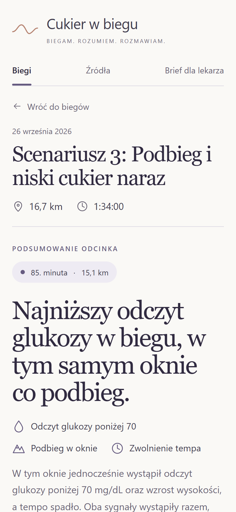
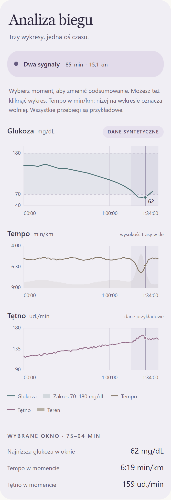
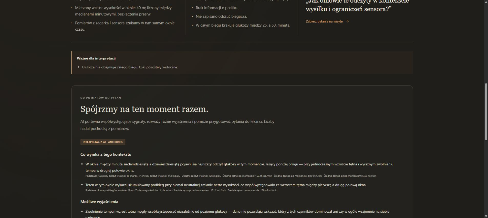
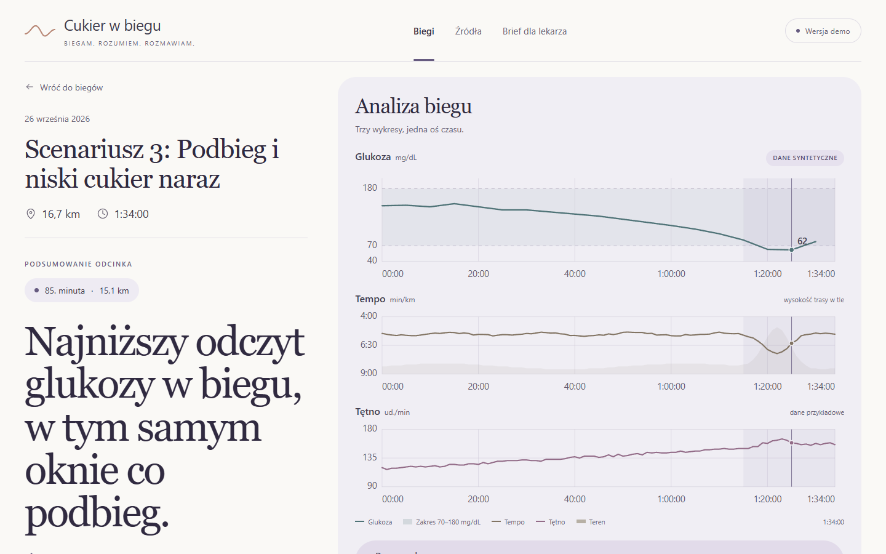
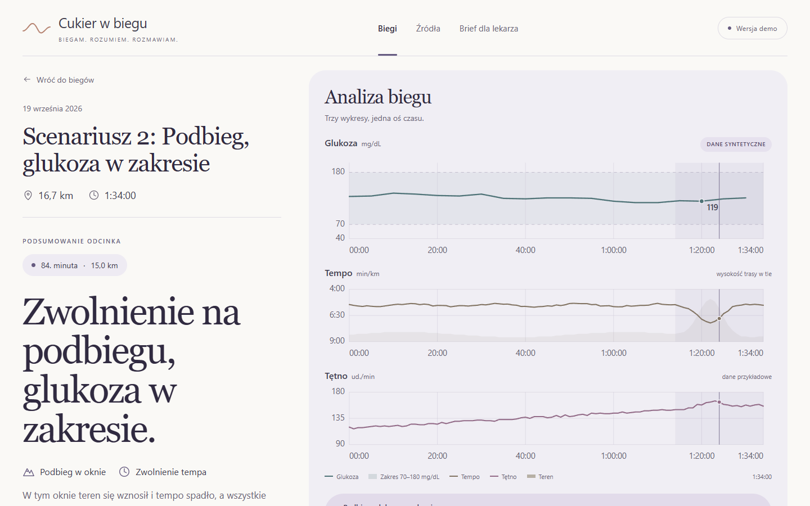
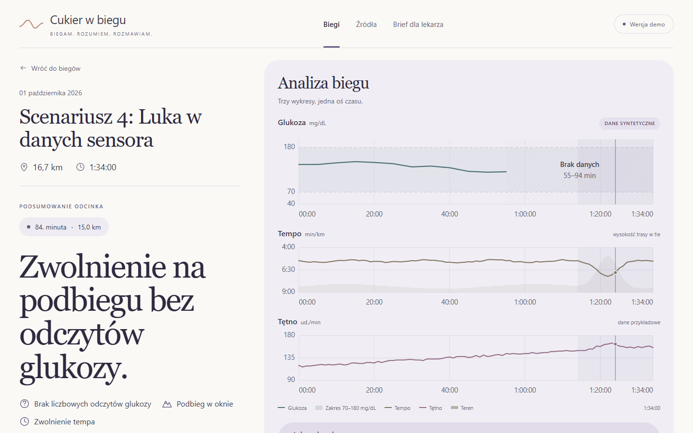
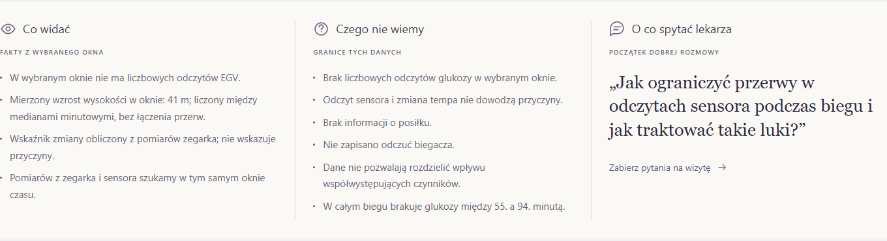
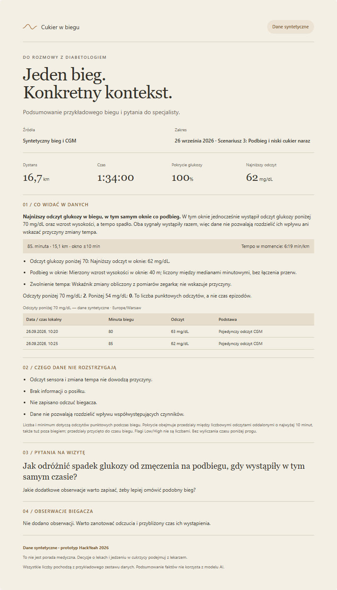

HackYeah 2026 · Sport & Healthcare
Glucose on the Run
Cukier w biegu
Two charts that never meet.
At kilometre 14 the pace falls apart. Was it the hill, the start, or glucose? The running watch records one half of the run, the glucose sensor records the other. Nobody puts them on the same clock.
So the runner lines up timelines by hand, and at the clinic “How is exercise going?” gets the answer “It depends.”
Schematic illustration, not data. The real app joins both on one timeline (next slides).
Who it is for
An adult runner with type 1 diabetes and a CGM.
Both data streams already exist: a FIT file from the watch and a Dexcom Clarity export. What is missing is one shared timeline and a way to bring it to the diabetologist.
- After a hard run: was the slowdown the terrain, the pacing, or a low glucose reading? Two apps, two clocks, no answer.
- At the clinic: a short visit, a vague memory, no concrete moment to discuss.
- What helps: what the data show, what they cannot show, and one good question to ask.
Deliberately narrow. One person, one run, one CGM export. The goal is a better conversation with a clinician, not a therapy tool: no doses, no food advice, no diagnosis.

Phone, 390 px: the selected moment first.

Three charts, one time axis.
How it works
Code computes the facts. Claude only interprets them.
No number appears on screen unless the engine computed it.
Two files
One running FIT and one Dexcom Clarity CSV. The runner confirms the CSV time zone and gives processing consent.
One clock
A Python engine parses both, aligns them and reads CGM in a ±10 min window. Gaps stay gaps.
One moment
For a selected moment: what the data show, what we do not know, what to ask the diabetologist.
One page
A printable brief for the visit, built from the same computed facts.
Optional AI layer · separate consent

Real production Claude analysis of the synthetic sample pair, 3 Oct 2026 (earlier dark UI theme). Each claim ends with “Podstawa” (basis): the computed facts it cites.
Scenario 03 · synthetic data
A hill and a low reading, in the same window.
Window 75–94 min, around minute 85 (15.1 km).
“Both signals occurred together, so the data cannot separate their effects or point to the cause of the slowdown.”
Question it prepares: “How can I tell a glucose drop from fatigue on a hill when they happen at the same time?”

Local build, 1440 × 900. The engine does not pick a winner when two signals overlap; it says they cannot be separated.

Scenarios 02 and 03 use the same synthetic watch data. Only the glucose trace differs, and so does the story.
Scenario 02 · synthetic data
The hill is there. Low glucose is not.
Window 74–94 min; every reading within 70–180 mg/dL.
“Terrain rose and pace dropped, while all glucose readings stayed within 70–180 mg/dL. This is co-occurrence, not proof of cause.”
The contrast is the insight: glucose drops out of the picture, the hill remains, and the app still makes no causal claim.
Scenario 04 · synthetic data
What we don’t know stays visible.
Glucose readings stop at minute 55. The hill and the slowdown come later.
“We don’t know what glucose was then, so this section cannot be compared with it.”
No interpolation, no guessed value. The question becomes: “How can I reduce sensor gaps during runs, and how should such gaps be treated?”


Every moment lists its unknowns, such as missing meal information and unrecorded feelings.

For the visit
One page for the diabetologist.
The brief turns the selected moment into a short, factual handout. Print it or save it as PDF from the browser.
- 01 What the data show — the moment, its window and the computed facts.
- Every reading below 70 mg/dL listed with time and run minute; a count, not an episode duration.
- 02 What the data do not settle — the unknowns, stated plainly.
- 03 Questions for the visit and 04 the runner’s own observations.
Scenario 03 shown: 16.7 km, 1:34:00, glucose coverage 100%, lowest reading 62 mg/dL, 2 readings below 70 and 0 below 54. The fact summary does not use the AI model. Synthetic data are labelled on the page itself.
Architecture & data flow
Small on purpose: one web app, one processor, no database.
Browser
- Upload, consent, timeline, moment, brief
- Results and notes live only in tab memory
- Refresh or reset clears them
Next.js server
- 2 MB per file, proxied to the engine with a shared secret
- HMAC-signs the computed result
- AI routes: consent, guards, fallback
Python engine
- FIT + Dexcom CSV parsing, time alignment
- Facts with IDs, ±10 min CGM windows, gaps
- Moment selection, separability
Only with separate consent: Next.js server → Anthropic Claude API, with selected computed summaries and nearby notes. No FIT/CSV files, GPS, absolute dates, device identity or secrets are sent.
Background IP (pre-existing)
From the author’s own UltraSoul project, commit 3c3f49d: three Python modules
(fit_parser, fit_adapter, run_signal_extractor) and their three test files.
Imported byte-exact on 3 Oct 2026, 13:02 CEST, unmodified; SHA-256 hashes in BACKGROUND_IP.md.
Built during HackYeah (after tag task-reveal-2026, 3 Oct 11:00)
- Dexcom CSV parsing, alignment, facts and context engine, HTTP API
- Whole UI, clinician brief, consent flows, AI integration with review and guards
- Four synthetic FIT/CSV scenarios and their generator; engine, route and AI tests
Pre-event neutral starter tagged pre-hackathon-starter-2026. AI coding assistants (Codex, Claude Code by Anthropic) logged in AI_USAGE.md.
Safety · privacy · honesty
Useful because it knows where it stops.
Clinical safety
- No insulin or medication doses, no food advice, no diagnosis. Code rejects AI output that tries.
- Co-occurrence, never causation.
- CGM is read in a ±10 min window, not as blood glucose at that second.
- Every displayed number comes from computed facts; missing data stays missing.
Privacy
- Two consents: processing to import, and a separate one naming the AI provider. Import sends nothing to AI.
- No accounts, no database, no browser storage. Original files and GPS are not kept.
- The AI provider’s own retention policy applies and is disclosed in the repo.
Honesty & limits
- All demo glucose data are synthetic and labelled on screen and in the brief.
- Not clinically validated. AI review is a quality check, not medical verification.
- One run at a time; running FIT and Dexcom Clarity CSV only; 2 MB per file.
What Claude receives (after AI consent)
Computed facts for the selected moment: lowest CGM reading, reading count and change, pace and heart-rate window halves, ascent, missing data, plus the runner’s nearby notes as untrusted data.
What it never receives
FIT or CSV files, raw streams, GPS, the run title, absolute dates and times, device identity, file names or credentials.
Next steps
From one run to a real clinic conversation.
Clinic pilot
Test the brief with a diabetes clinic and runners who consent to share real data: is the visit shorter and more concrete?
More sources
Other CGM exports and other watch formats, with the same rule: gaps stay visible.
Period view
Several runs side by side, so recurring moments can be discussed, still without causal claims.
Official Garmin API
Import runs through the official Garmin developer program instead of manual FIT files.
Live demo (no account, synthetic data)
Źródła → pick a scenario → consent → see the run.
Public repository and provenance records
github.com/szmefo/hackyeah-2026
BACKGROUND_IP.md · AI_USAGE.md · THIRD_PARTY.md · DECISIONS.md
What the data show. What they don’t. What to ask the doctor.